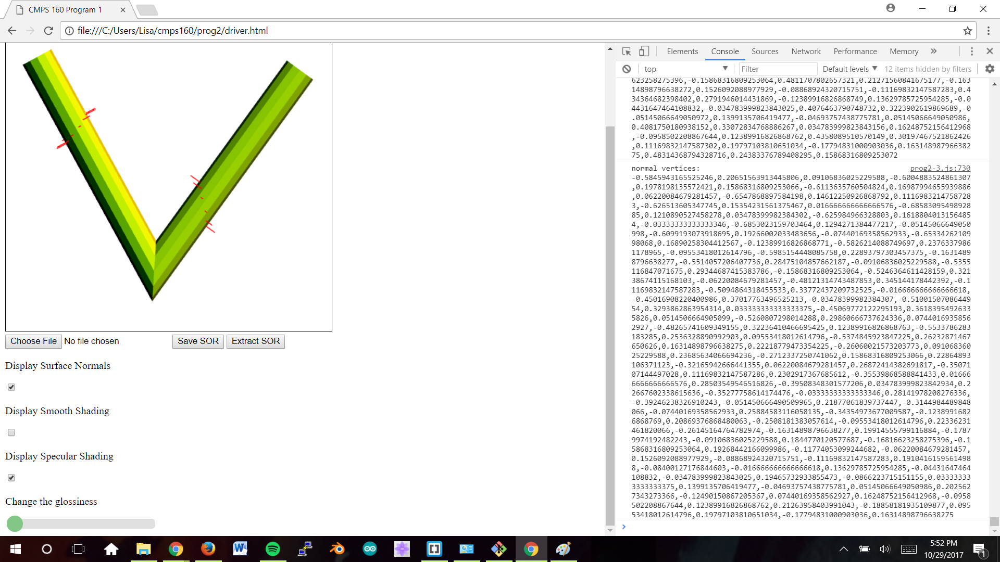

Create a blank (white) canvas at least 500 x 500 in dimension.
Recognize left and right mouse clicks. Terminates polyline on right mouse click.
Draw rubberband line between the last point and the current mouse position.
Rotates 12 coordinates around point and prints out array to console.
Translates 12 coordinates from unit cylinder to the left mouse points and prints array to console.
Creates an index array and prints it to the console.
Creates a vertex array with both indices and coordinates for each index to connect and prints array to console.
Stores GC
Calculates surface normals and colors of polygons
Displays surface normals on toggle
Displays shaded cylinders
Provides user option to toggle between flat/smooth and specular shading.
Has a slider to display different levels of glosiness for specular shading
Does not extract files
Move mouse around canvas and left-click to create a rubberband line. Move the mouse again to decide where to place a rubberband line on the next left mouse click. Coordinates are calculated to generate a cylinder between the last and most recent mouse clicks. The polyline is completed when the user right clicks and 3D cylinders are formed with light. The user can also save a file, choose the file, and extract the file. If the user enables normals, the normal vectors will be displayed. The user can toggle between flat/smooth shading. The user can also enable specular shading and change the glossiness with the slider
None.
